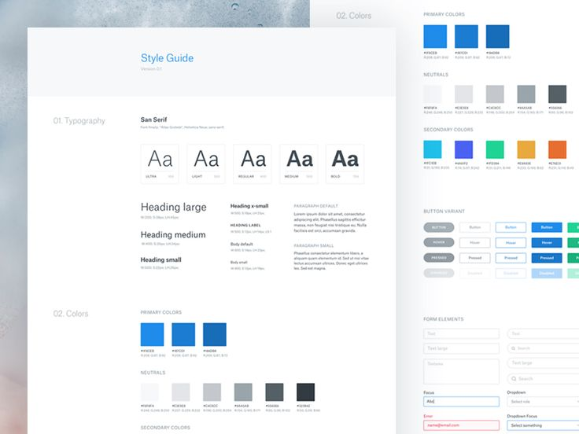
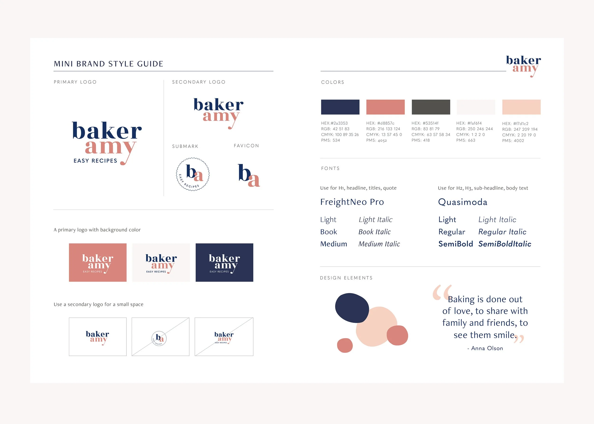
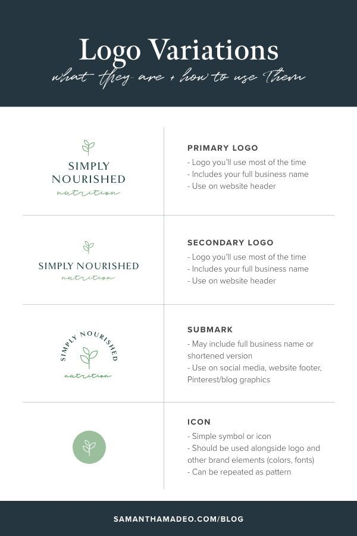
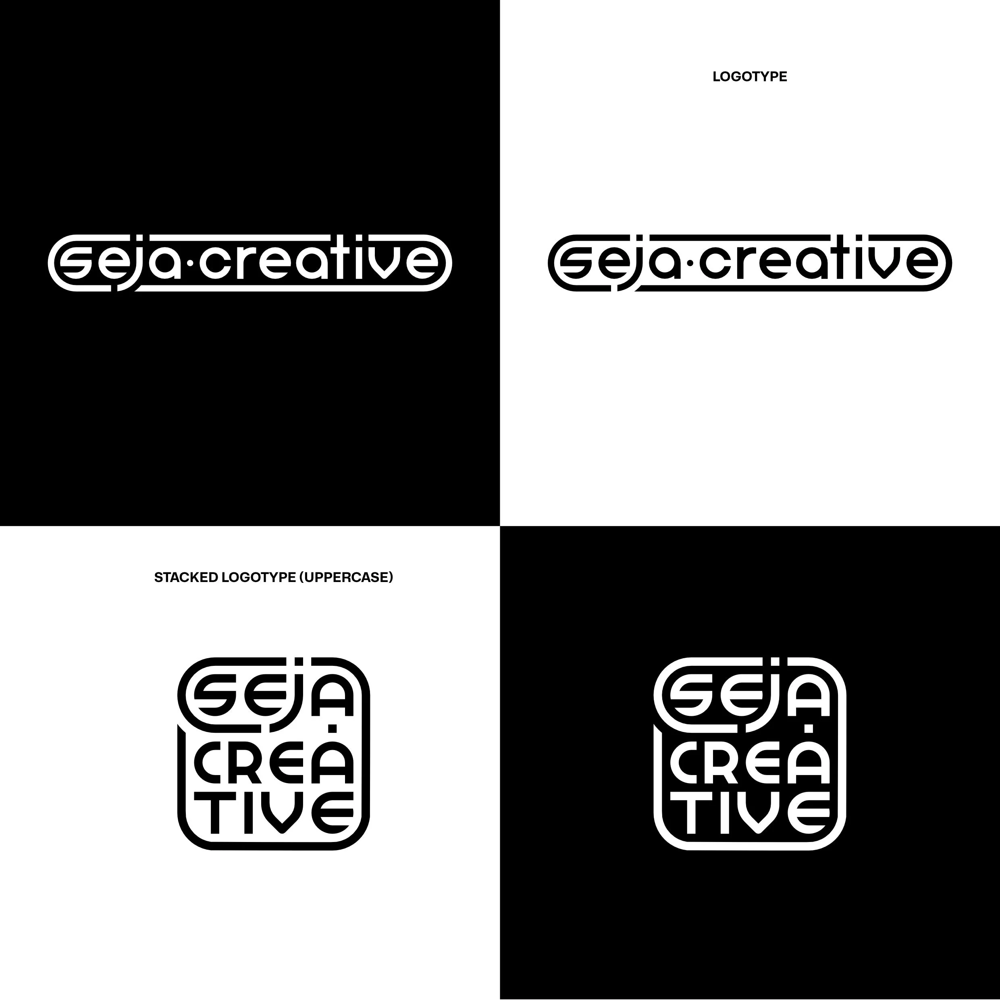
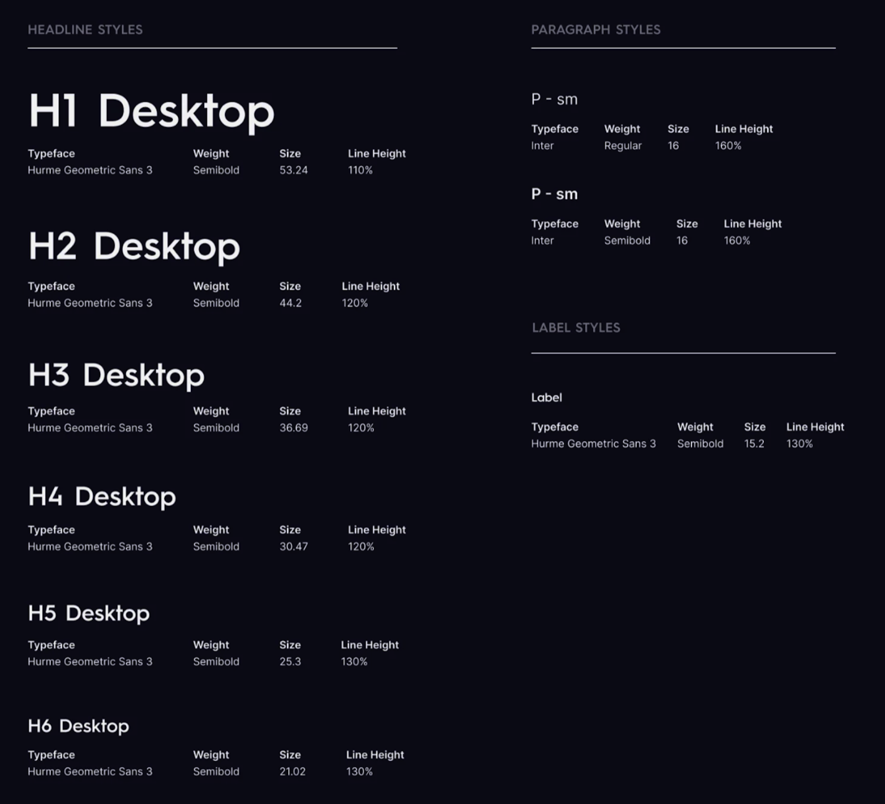
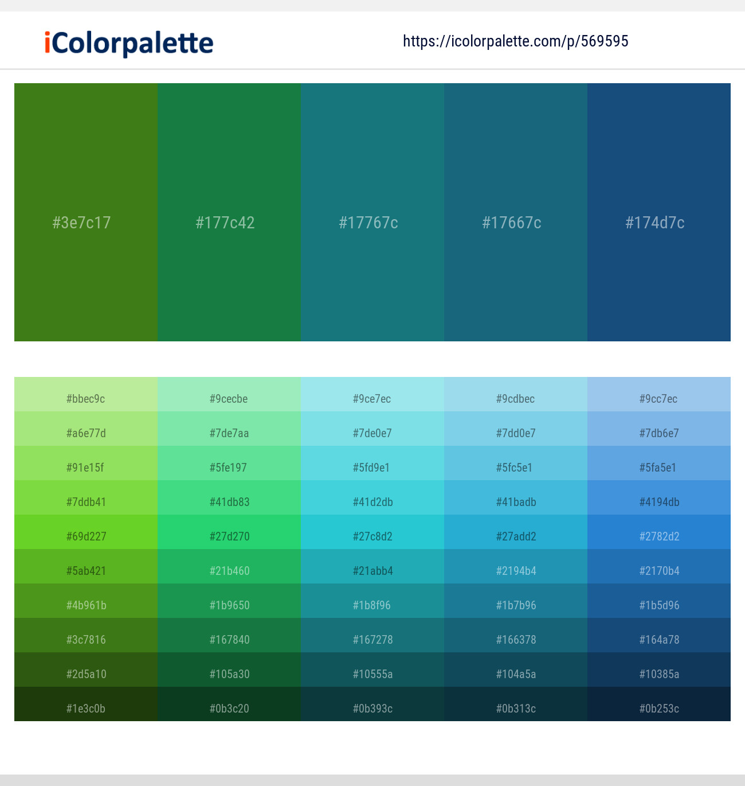
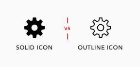
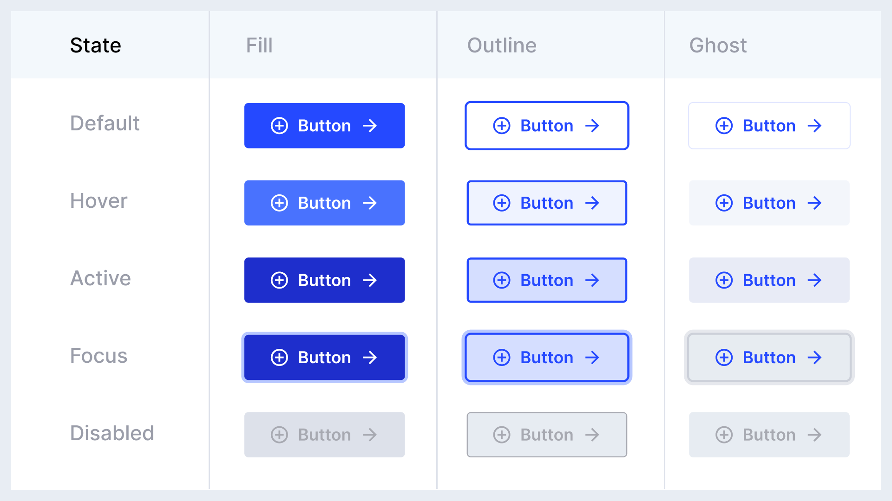
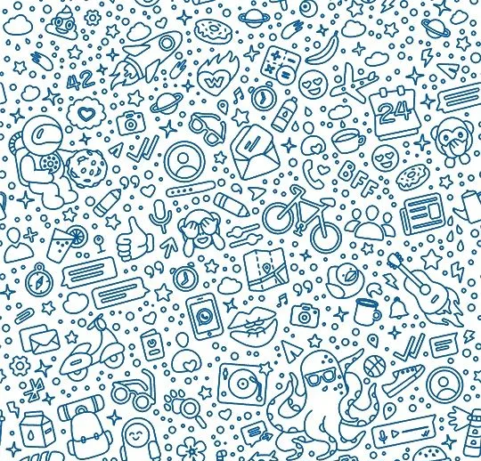

What is a Style Guide? A practical document that fixes a product's visual rules, its logo, typography, colours, icons and buttons, so every screen stays consistent.
On this page
Context
Now that we have established a visual direction with a mood board, it’s time to formalise that style into a structured style guide. Mood boards are inspirational, but a style guide is practical. It documents rules for typography, colours, and components so that design work stays consistent across screens, pages, or products. In this exercise, students will create their own digital style guide in Figma.
Total Style Guide Checklist
- [ ] Logo
- [ ] Typography
- [ ] Colours
- [ ] Icons
- [ ] Buttons
- [ ] Textures (Optional)
- [ ] Components (Advanced)
Goal / Learning Outcome
By the end of this activity you should have, students will have developed a robust style guide that can be used as the basis for a design system.


Main Exercise
Please create the following 5 items inside a Figma art board and if you feel like it, develop 6 and 7:
1. Logo
The primary visual identifier of a brand, serving as a consistent symbol of recognition across all user experiences.
✅ Logo Checklist
- [ ] Primary Logo
- [ ] Secondary Logo
- [ ] Submark
- [ ] Icon / Favicon


Be aware that it can be useful to present a logo against both a black and a white background.
2. Typography
Defines the visual style of text, ensuring consistency, readability, and brand personality across all digital and physical experiences.
✅ Typography Checklist
- [ ] Heading 1
- [ ] Heading 2
- [ ] Heading 3
- [ ] Body

The above example goes from Heading 1 - 6, this is not always necessary and H1 - H3 in many places in sufficient. But always include a Body text. This is typically set at a baseline of 16px.
✅ Checklist (Per item)
- [ ] Typeface Title Example (i.e, H1 Desktop)
- [ ] Typeface Name
- [ ] Weight (Bold, Semi Bold, Light, Italic)
- [ ] Size (in PX)
- [ ] Line Height (Optional)
3. Colour Palette
Establishes the brand’s core colours, providing consistency and visual harmony across all user interfaces and touch points.
✅ Colour Checklist
- [ ] Primary Colour
- [ ] Primary Colour Palette
- [ ] Secondary Colour
- [ ] Secondary Colour Palette
- [ ] Monochrome Color
- [ ] Monochrome Palette

Be sure to include Hex Values
4. Icons
Defines the brand’s iconography, ensuring clarity and recognisability across all platforms and user interactions.
✅ Icons Checklist
- [ ] Icons Fill
- [ ] Icons Outline

5. Buttons
Dynamic Buttons Exercise →
Touch points that allow users to orientate their way around your site. Be sure to
✅ Buttons Checklist
- [ ] Default Button
- [ ] Hover Button
- [ ] Active Button

In the above example there are 5 states, and 3 variants, Fill, Outline and Ghosted. Be sure to include at minimum: default, hover and active in the fill variant.
6. Textures (Optional)
Defines the brand’s iconography, ensuring clarity and recognisability across all platforms and user interactions.
✅ Textures Checklist
- [ ] Textured Background
- [ ] Alternative Background

You’ll all be familiar with WhatsApp texture patterns which gives a background flexibility and identity
7. Components (Advanced)
Defines reusable UI elements that ensure consistency, accessibility, and efficiency across the application.
✅ Foundational Components Checklist
- [ ] Buttons
- [ ] Inputs (text, password, textarea)
- [ ] Selects / Dropdowns
- [ ] Checkboxes
- [ ] Radio buttons
- [ ] Toggles / Switches
- [ ] Sliders
- [ ] Date & time pickers
- [ ] Avatars / Badges / Chips
- [ ] Icons
✅ Complex Components Checklist
- [ ] Cards
- [ ] Menus (context, dropdown, mega menu)
- [ ] Navigation (top bar, side nav, breadcrumbs)
- [ ] Modals / Dialogs
- [ ] Tooltips
- [ ] Tabs
- [ ] Accordions
- [ ] Pagination
- [ ] Tables
- [ ] Toasts / Alerts / Notifications
- [ ] Progress indicators (spinner, bar, stepper)
Components – Material Design 3
Extra Notes
Students can expand their style guide over time by adding grids, spacing, do nots, iconography, or interaction rules. This exercise focuses on the essentials: typography, colour, and basic components.
Template
Tips
- Keep it simple but structured — your style guide should be easy to scan.
- Always include technical specs like font names and hex codes so others can apply them directly.
- Align and organise sections neatly in Figma frames so the guide itself feels professional.
Media
Summary
A style guide is a structured reference that translates a design’s mood and inspiration into practical rules for consistent use. Unlike a mood board, which is exploratory and inspirational, a style guide is formal and technical. It specifies fonts (with sizes and weights), colors (with hex values), and key interface components (like buttons or text fields). Style guides are useful because they ensure consistency across projects, help teams collaborate smoothly, and make design scalable as products grow. By creating their own style guide, students will practice turning creative ideas into concrete, reusable standards that anchor all future design work